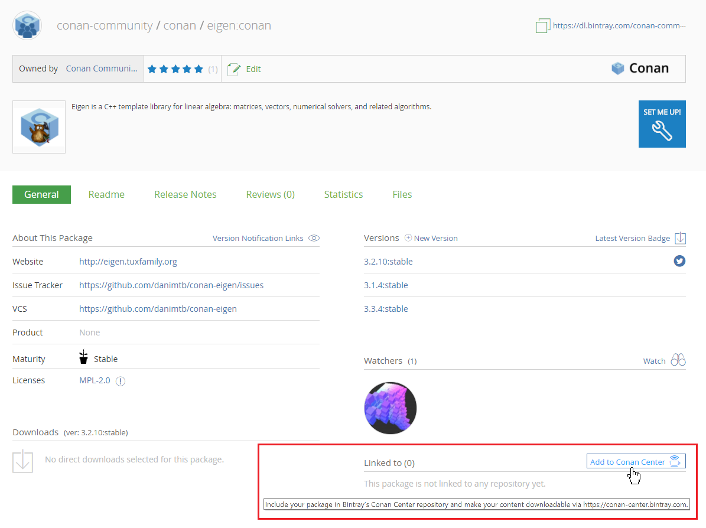

Contributing packages to conan-center¶
As a moderated and curated repository, conan-center will not be populated automatically. Initially, it will be empty. To have your recipe or binary packages available on conan-center, you need to submit an inclusion request to Bintray, and the Bintray team will review your request.
- If you are the author of an open source library, your package will be approved. Keep in mind that it is your responsibility to maintain acceptable standards of quality for all packages you submit for inclusion in conan-center.
- If you are packaging a third-party library you need to follow the guidelines below.
When you know how to upload your packages to your own Bintray repository, contributing a library to Conan Center is really straightforward. All you have to do is to navigate to the main page of the package in Bintray and click the “Add to Conan Center” button to start the inclusion request process.
Inclusion guidelines for third party libraries¶
In the inclusion request process, the JFrog staff will perform a general review and will make suggestions for improvements or better/cleaner ways to implement the package.
One conan package per OSS library¶
Before creating packages for third party libraries, please read these general guidelines.
- Ensure that there is no other conan package for the same library. If you are planning to support a
new version of a library that already exists in the
conan-centerrepository, please, contact the package author and collaborate. All the versions of the same library have to be on the same Bintray Conan package. - It is recommended to contact the library author and suggest to maintain the Conan package. When possible, open a pull request to the original repository of the library with the conan needed files or suggest to open a new repository with the recipe.
- If you are going to collaborate with different users to maintain the Conan package, open a Bintray organization.
Recipe quality¶
- Git public repository: The recipe needs to be hosted in a public Git repository that allows collaboration.
- Recipe fields: description, license and url are required. The license field refers to the library being packaged.
- Linter: Is important to have a reasonable clean Linter, conan export and conan create will output some warnings and errors, keep it as clean as possible to guarantee a recipe less error prone and more understandable.
- Updated: Not using deprecated features and when possible, using latest conan features, build helpers etc.
- Clean: The code style will be reviewed to guarantee the readability of the recipe.
- test_package: The recipes must contain a test_package
- Maintenance commitment: You will be the responsible to keep the recipe updated, fix issues etc., so a minimal commitment will be required. Conan organization reserves the right to unlink a poorly maintained package or replace it with better alternatives.
- Raise errors on invalid configurations: If the library doesn’t work for a specific
configuration, e.g. requires gcc>7 the recipe must contain a
configure(self)method that raises an exception in case of invalid settings/options.
def configure():
if self.settings.compiler == "gcc" and self.settings.compiler.version < "7.0":
raise ConanException("GCC > 7.0 is required")
if self.settings.os == "Windows":
raise ConanException("Windows not supported")
- Without version ranges: As many libraries does not follow semantic versioning and the dependency resolution of version ranges is not always clear, recipes in conan center should fix the version of their dependencies and not use version ranges.
- LICENSE of the recipe: The public repository must contain a
LICENSEfile with an OSS license. - LICENSE of the library: Every built binary package must contain one or more
license*file(s), so make sure that in thepackage()method of your recipe, you are copying the library licenses to alicensessubfolder.
def package():
self.copy("license*", dst="licenses", ignore_case=True, keep_path=False)
Sometimes there is no license file, and you need to extract the license from a header file, this
is an example:
def package():
# Extract the License/s from the header to a file
tmp = tools.load("header.h")
license_contents = tmp[2:tmp.find("*/", 1)] # The license begins with a C comment /* and ends with */
tools.save("LICENSE", license_contents)
# Package it
self.copy("license*", dst="licenses", ignore_case=True, keep_path=False)
CI Integration¶
If you are packaging a header only library, it is only needed to provide one CI configuration (e.g. Travis with gcc 6.1) to check that the package is built correctly (use conan create).
Unless your library is a header only library or doesn’t support a concrete operating system or compiler you will need to provide a CI systems integration to support:
- Linux: GCC, desirable latest version from each major (4.9, 5.4, 6.3)
- Linux: Clang, desirable latest version from each major (3.9, 4.0)
- Mac OSX: Two latest versions of apple-clang, e.j (8.0, 8.1) or newer.
- Windows: Visual Studio 12, 14 and 15 (or newer)
The easiest way to provide the CI integration (with Appveyor for Windows builds, Travis.ci for Linux and OSX, and Gitlab for Linux) is to use the conan new command. Take a look to the options to generate a library layout with the needed appveyor/travis/gitlab.
You can also copy the following files from this zlib Conan package repository and adapt them:
.travisfolder. Not needed to adjust anything..travis.ymlfile. Adjust your username, library reference etcappveyor.ymlfile. Adjust your username, library reference etc
Take a look to the Travis CI, Appveyor and GitLab CI integration guides.
Bintray package information¶
In the bintray page of your package fill the following fields:
- Description (description of the packaged library)
- Licenses (license of the packaged library)
- Tags
- Maturity
- Website: If any, website of the library
- Issues tracker: URL of the issue tracker from your github repository e.j: https://github.com/lasote/conan-zlib/issues
- Version control: URL of your recipe github repository. e.j: https://github.com/lasote/conan-zlib
- GitHub repo (user/repo): e.j lasote/conan-zlib
In each version page (optional, but welcomed):
- Select the README from github.
- Select the Release Notes.